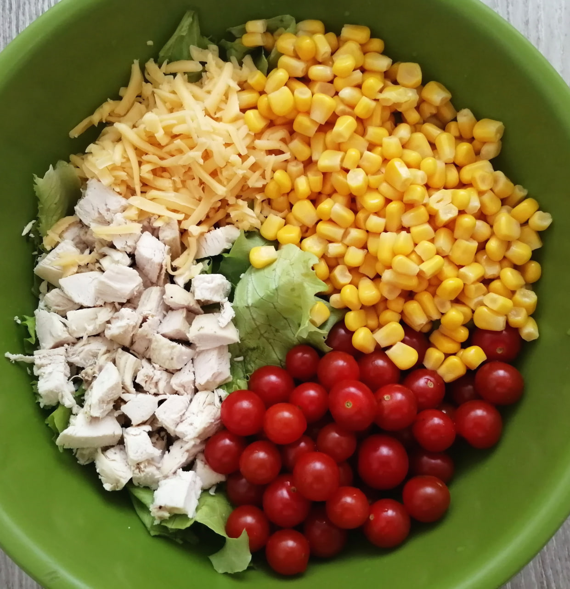

Желтый салат

- куриное филе — 1 шт
- помидоры — 4 шт
- консервированная кукуруза — 1 банка
- сыр — 200 г
- майонез
1 куриное филе порезать на мелкие кубики, обвалять в приправе для курицы и обжарить на скороде до готовности, выложить в миску. 4 помидора порезать кубиками и отправить в миску, добавить банку кукурузы, 200 гр. сыра порезать на кубики и тоже отправить ко всем ингридиентам.
Заправить майонезом. Подавать охлажденным.
 Назад к списку рецептов
Назад к списку рецептов